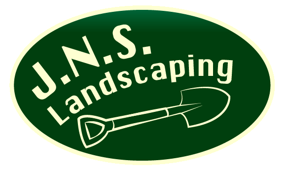

|  |
Please Enter Your Name:
Welcome: |
Below are the some most common insects that affect landscapes. Our research will give you the knowledge to diagnose issues and also offer you solutions with our customized Tree and Shrub Pest Control Services. Contact us for more information and help to control these common problems and keep your trees and shrubs pest free.
Aphids
Large populations cause curling, yellowing, and distortion of leaves and stunting of shoots; they can also produce large quantities of a sticky substance known as honeydew.
Black Vine Weevil
Weevil damage shows up on the foliage in crescent shaped feeding patterns. After hatching, weevils are legless grubs that feed on the roots of the plant.

Maple Twig Borer
Early warning signs of this pest infestation in a maple will be premature yellowing of the leaves leading to early leaf drop. Find out how to identify this pest.

Insect Pests
Grubs and chinchbugs are the primary insect pests associated with Michigan soils.

Weed Pests
Crabgrass and dandelions are the two most common problems for michigan lawns. There are a number of broadleaf weeds that are also common to Michigan, and most of these can be spot treated with an effective herbicide.(See our lawncare fertalizing page for more info)